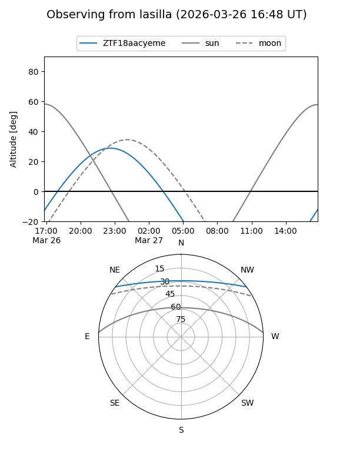
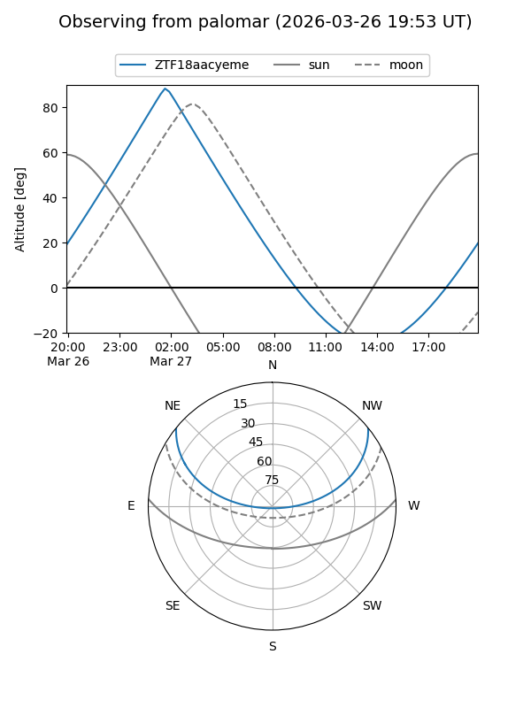

ZTF18aacyeme
Target ZTF18aacyeme at 2026-03-27 05:57
Aliases and brokers:
FINK: link
Lasair: link
ALeRCE: link
alt names
ZTF18aacyeme (ztf,fink_ztf)
Coordinates:
equatorial (ra, dec) = 92.4358,+31.86556
equatorial (HMS+DMS) = 06:09:44.59,+31:51:56.02
galactic (l, b) = (180.0536,+5.96798)
Flags:
Photometry:
last ztfg=16.04
1 ztfg detections
Lightcurve
Visibility


Additional plots